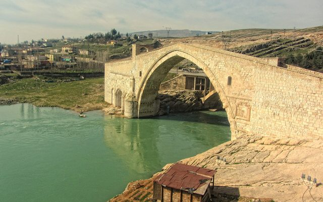
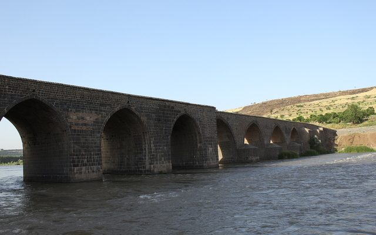
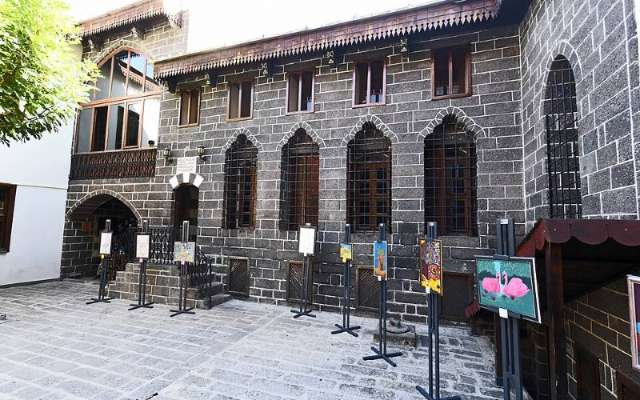

الرئيسية › أماكن تستحق الزيارة حسب الولاية › ديار بكر
يضم دليل Kültür Varlıkları 17 مكانًا في ديار بكر: 6 قلعة ومبنى تاريخي, 5 متحف, 3 موقع أثري, 3 مبنى ديني. ستجد أدناه أبرز الأماكن وخريطة والقائمة الكاملة.
⭐ أبرز الأماكن

1 · ديار بكر · متحفمتحف بيت جاهد صدقي ترانجي الإثنوغرافي
متحف جاهد صدقي ترانجي هو البيت التقليدي في حي سور التاريخي بديار بكر الذي وُلد فيه الشاعر، المحبوب لدى أجيال بفضل قصيدته «خمسة وثلاثون عامًا».

2 · ديار بكر · موقع أثرينفق دجلة (كهوف بيركلين)
في ليجه بديار بكر، نفق طبيعي وكهوف يمر عبرها رافد لدجلة.

3 · ديار بكر · متحفمتحف ديار بكر الأثري
يقع متحف ديار بكر الأثري بين المباني المرمّمة في القلعة الداخلية التاريخية للمدينة، ويروي عشرات آلاف السنين من تاريخ حوض دجلة الأعلى.
🗺 على الخريطة
📍 جميع الأماكن (17)
قلعة ومبنى تاريخي (6)
 أسوار ديار بكرقلعة ومبنى تاريخي
أسوار ديار بكرقلعة ومبنى تاريخي قلعة إيغيل ومقامات الأنبياءقلعة ومبنى تاريخي
قلعة إيغيل ومقامات الأنبياءقلعة ومبنى تاريخي قصر غازيقلعة ومبنى تاريخي
قصر غازيقلعة ومبنى تاريخي خان حسن باشاقلعة ومبنى تاريخي
خان حسن باشاقلعة ومبنى تاريخي
جسر ملاباديقلعة ومبنى تاريخي
جسر العيون العشر (جسر دجلة)قلعة ومبنى تاريخيمتحف (5)
متحف بيت جاهد صدقي ترانجي الإثنوغرافيمتحفمتحف ديار بكر الأثريمتحف
متحف ضياء كوك ألبمتحفمتحف بيت أتاتورك في ديار بكرمتحفمتحف بيت أتاتورك في سلوانمتحف